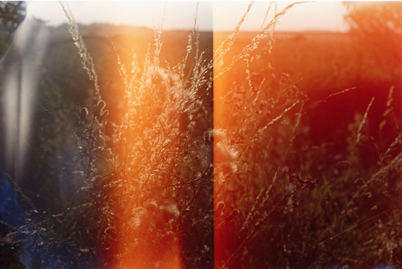

-
An interview with photographer Ben Stockley, discussing travel and work in the 21st Century.
view post

-
A talk with UAL Alumni and illustrator Juliana Futter, on aesthetics.
view post
-
Julia's creative director Valerio Di Lucente reveals the process behind Bard's new identity.
view post